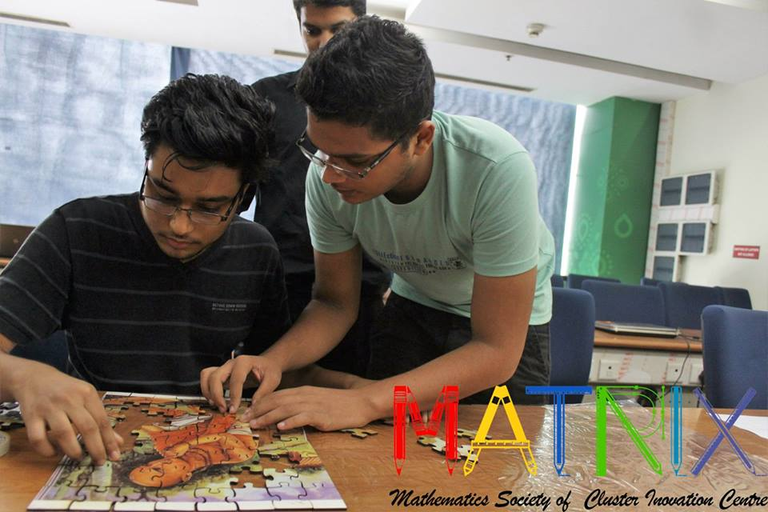

MATRIX, the Mathematics Education Society of Cluster Innovation Centre, University of Delhi organized their maiden event ‘MATRIX 1.0’ on 5th October 2016. The aim of the society is to impart mathematical culture within the community with the help of various activities, workshops and other events. MATRIX 1.0 was a full day affair comprising of four components, namely, Mathematical Quiz, screening of the movie ‘The Man Who Knew Infinity’, Mathematical Rangoli and Mathematical Games. The entire event was open for students of all colleges and departments. Anyone who had some interest in mathematics was welcome.
The day started with ‘Mathematical Quiz’ which had students participating individually in the first round and then paired in teams of two as they qualified for further rounds. While the first round of the quiz dealt mainly with logical reasoning, analytical ability and questions requiring an insight into the mathematical concepts, the second round, which had qualified participants teamed up randomly in pairs, dealt with the philosophical and historical aspects of the developments in the field of mathematics. The third and final round of the quiz was a rather interesting one requiring the finalists to first solve a jigsaw puzzle and then figure out the question at the back of it to answer before everyone else in order to emerge as winners.
The second part of the event was screening of the movie ‘The Man Who Knew Infinity’, based on the life and academic career of world renowned Indian mathematician, Srinivasa Ramanujan, and his friendship with his mentor, Professor G.H. Hardy. The movie tracks how Ramanujan, a man of boundless intelligence, overcame barriers and hardships devoting his life to mathematics and that even the abject poverty of his home in India could not crush. The movie is an inspiration for aspiring mathematicians and young minds to not be shaken by the challenges that life puts in their path.This was followed by ‘Mathematical Rangoli’, which was a team affair. The teams were judged by a panel on the basis of the mathematical concept, its representation, description given to the jury, color combination, design, finishing and innovation in their Rangoli.Various mathematical games were open the entire day for students to get indulged in, like Tangram Puzzles requiring a player to arrange tans (mathematical shapes) in a given stencil, Magic Polygon Puzzles requiring a player to arrange natural numbers along the sides of given polygons to get a specific sum, Poles Apart requiring players to block the competitors move on the basis of certain rules and educational games ‘Tum Yum’ and ‘Shores’ from MAG Initiatives were available for attendees to play, enjoy and learn. The final affair of the day, ‘Chess Based Games’ was a competitive event requiring individual participation. A different way of playing the tactical game of chess was used, with competitors pitted against their own self in order to achieve and better certain objectives that required positioning of chess pieces on the chessboard in specific arrangements. The games were conducted in four rounds, where progress to further rounds was based on the performance of previous rounds and they got tenacious as participants proceed. The day ended with Prize distribution to the winners of various competitive events, while participation certificates were given to all those who participated. MATRIX 1.0 was just the first step taken by the society in its passage to uncover possibilities and achieve new horizons of collaboration with those who have interest in mathematics and mathematics education.
For Details,
- Contact: Priyankesh Dixit (8800456923)
- M.Sc. Mathematics Education, Cluster Innovation Centre Robin Sharma (9717265466)
- M.Sc. Mathematics Education, Cluster Innovation Centre Sourabh Garg (9999740342)
- M.Sc. Mathematics Education, Cluster Innovation Centre